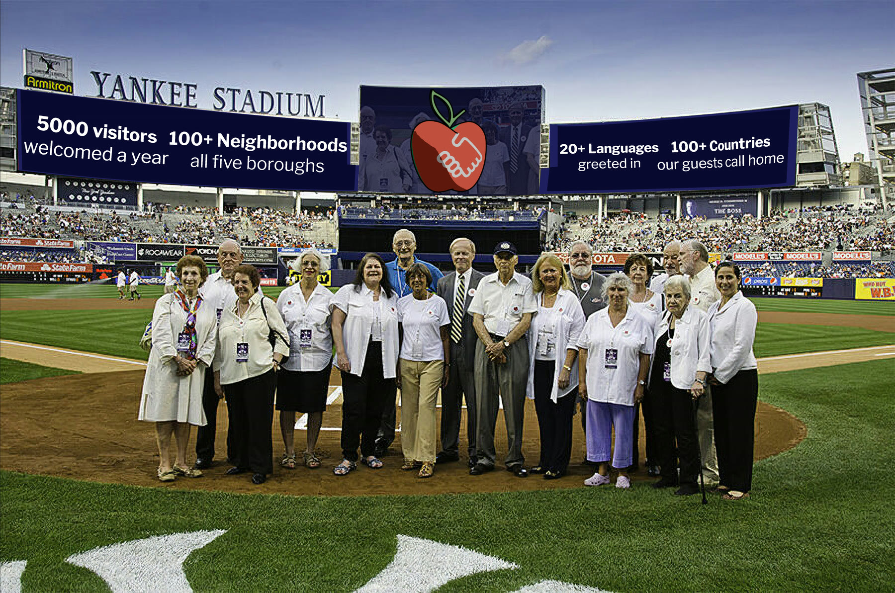

Every block below is the real markup, lifted from the page that owns it and
rendered against assets/site.css and assets/blocks.css.
No page has been migrated. This is what the library looks like on its own.
About Us · Since 1992
That was Lynn Brooks’s promise when she founded Big Apple Greeter, the world’s first free welcome-visitor program. Thirty-five years later, it still runs the place.
Stroll above Manhattan streets on the High Line. Poke into the happening shops of Brooklyn. Savor the ethnic murals and delicious foods of the Bronx or Queens. Ferry your way past Lady Liberty to a new point of view.
Spend two to four hours getting the insider scoop from volunteers who actually live here. We’re not professional tour guides. We’re the people of New York, proudly representing our city and sharing it with you.
Learn MoreA profile of volunteer Ellen Gasnick, greeting visitors since the early 1990s.
The city’s official tourism site on why a free walk with a local beats any bus tour.
Volunteers rally foot traffic for Chinatown and Little Italy businesses hit by the tourism slump.
Why a free walk with a New Yorker beats the guidebook, from the sightseeing-pass company.
“The cream of the crop.”
— Jon L, July 2026
★★★★★“Book it!”— Emma D, Glasgow, United Kingdom · July 2026
★★★★★“One of the best travel experiences ever.”— Troy H, Melbourne, Australia · June 2026
★★★★★“Tips and tricks that only true locals know.”— Zorica V, Novi Sad, Serbia · February 2026
★★★★★“Our greeter Karen was lovely and showed us some wonderful places.”— TripAdvisor reviewer · February 2026
★★★★★“An essential part of each visit.”— Tom L, Ottawa, Canada · November 2025
★★★★★“The most wonderful introduction to New York City.”— TripAdvisor reviewer · 2025
★★★★★“The fact that it is free is amazing!”— TripAdvisor reviewer · 2025
★★★★★“The walk along the promenade with the Lower Manhattan skyline as a backdrop is wonderful.”— TripAdvisor reviewer · 2025
Where Edgar Allan Poe, Lauren Bacall, and Billy Joel once lived, and where hip hop and salsa were born. Eat your way down Arthur Avenue, catch the Yankees, or wander the Bronx Zoo and the New York Botanical Garden.
Big in size, population, and character. Grab a Nathan’s hot dog at Coney Island, a slice of Junior’s cheesecake downtown, and an afternoon at the Brooklyn Museum and Botanic Garden.
Broadway, the history of Lower Manhattan, Central Park, world-class museums, plus thousands of restaurants and shops packed onto one island.
One of the most culturally diverse urban areas on the globe. Eat around the world in a single afternoon, see the Mets at Citi Field or the U.S. Open, and visit the Louis Armstrong House Museum.
Start with the free ferry and its harbor views of Lady Liberty. Then explore museums, Revolutionary War sites, parks, botanical gardens, and the Empire Outlets.
You’ll be shown around the city the way a good friend would do it. Greeters aren’t professional guides. They’re New Yorkers sharing what it’s like to live here, drawing on their own neighborhoods, experiences, and favorite spots. Your interests set the agenda, and the goal is simply that you enjoy the city the way locals do.
We match primarily by language and by the neighborhoods you request. Whenever possible, we also consider your personal interests, so the more you tell us on the request form, the better your match.
We wish we could say yes. We receive far more requests than our volunteers can fulfill, and availability is especially limited during peak season, April through October. Requesting early, and being flexible on dates and neighborhoods, gives you the best chance.
Once your visit is confirmed, you’ll get an email with your Greeter’s name and contact details. Add our office email to your safe-sender list and check your spam folder so nothing slips past you.
One important step: after you arrive in New York, you must contact your Greeter again to reconfirm your visit.
No. Each volunteer meets with one visitor or traveling group at a time. It’s what keeps a greet personal instead of feeling like a tour.
Volunteer opportunities are open to everyone without regard to race, ethnicity, color, creed, country of origin, gender identity, sexual orientation, age, marital status, or disability.
New Yorkers with disabilities are warmly welcomed as volunteers, and our office at 1 Centre Street is ADA compliant.
Why We Greet · Lester Barnett
He recalled a couple who wanted to have a glass of wine at each of a series of New York bars. “They wanted a rich bar, they wanted a poor bar, they wanted an Irish bar,” he said. Toward the end of the night, the woman went to the ladies’ room and her husband told Barnett that she had a terminal illness. “All she wanted to do was go to New York and toast each other all over the city,” Barnett said. “That’s why I’m a Greeter. You enter people’s lives in a way that is astounding.” As published in The New Yorker
Big Apple Greeter is tax-exempt under section 501(c)(3) of the Internal Revenue Code. Donations to Big Apple Greeter are tax deductible to the extent allowed by law.

Visit with a New Yorker who loves this city, or become the New Yorker someone remembers forever.
A volunteer will use these details to confirm your visit and answer any questions before you arrive in New York City.